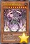
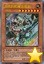
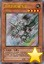
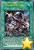
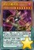
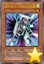
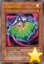
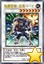
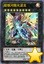

以下是可以在122.0.65.73 23333端口使用的先行卡的列表。下载补丁后即可使用。
使用方法：原版游戏下载补丁后解压至游戏文件夹，YGOMobile请自定义数据库（方法请查看压缩包内使用说明），暂不保证对其他版本的支持。
资料来源：任天堂世界论坛，@Solari_28。
脚本作者：ygopro-pre-script，YGOPRO。目前所有脚本来自于以上这2个项目，在此对各自的贡献者表示感谢。
版权声明：转载请注明出自本页面，并完整保留附带的使用说明文档。如果您想对本项目进行修改，请移步这里，但我们建议您直接参与官方项目ygopro-pre-script。
星星和加号图标是Yusuke Kamiyamane的作品。
更新记录
- 2016-08-28 20:53
- 新卡：超重忍者 忍足-A·C。
- 修复：光波异邦臣不能在手卡发动的问题。
- 修复：参考最终一战！的调整，超级量子必杀 阿尔方球应能在对方没有怪兽可特殊召唤的场合发动。
- 修复：光波分光部分情况下不能发动的问题。
- 2016-08-24 22:04
- 新卡：超级量子必杀 阿尔方球。
- 更新：优化部分卡图。
- 2016-08-22 00:33
- 修复：风魔女-冰铃在场上有怪兽的场合也能特殊召唤的问题。
- 2016-08-21 21:34
- 修复：风魔女-冰铃额外卡组特殊召唤限制无效的问题。
- 更新：删除已经正式更新的卡。
- 2016-08-21 13:13
- 修复：疾行机人 OMK口香糖不能增加攻击力的问题。
- 2016-08-20 21:27
- 修复：疾行机人 竹马高跷②效果无法使用的问题。
- 2016-08-20 20:07
- 修复：补全新卡列表。
- 2016-08-20 19:05
- 新卡：疾行机人 竹马高跷、风魔女-冰铃、光波分光。
- 2016-08-18 21:06
- 修复：超银河眼光波龙只能获取1只怪兽控制权的问题。
- 修复：疾行机人 OMK口香糖同调召唤效果应为战斗阶段任意时点发动。
- 2016-08-18 02:01
- 修复：降龙之魔术师加倍攻击力效果无效的问题。
- 修复：风魔女-雪铃从手卡特殊召唤效果无效的问题。
- 修复：勇猛眼灵摆龙无法使用的问题。
- 修复：古代的机械飞龙应为检索「古代的机械」卡，修复发动后可以把魔法·陷阱卡盖放的问题。
- 修复：部分效果提示不显示的问题。
- 2016-08-17 21:37
- 新卡：VJMP新卡共11张。
- 更新：删除已经正式更新的卡。
- 2016-08-03 22:45
- 修复：部分卡发动时的提示显示为问号的问题。
- 更新：更改部分卡名，优化部分卡图。
- 2016-07-29 01:53
- 新卡：堕天使 安度西亚。
- 更新：优化部分卡图。
- 修复：谍网 王牌特工未被标记为取对象的问题。
- 2016-07-25 11:18
- 修复：忍法帖效果无法使用的问题。
- 2016-07-24 23:11
- 新卡：命运英雄 神性人。
- 更新：删除已经正式更新的卡。
- 修复：魔界台本「火龙的住处」在双方怪兽都被战斗破坏的场合应也能发动。
- 2016-07-24 18:00
- 修复：魔界台本「魔王的降临」①效果会计算守备表示的魔界剧团怪兽数量的问题。
- 修复：谍网装备-无人机能只把自己从墓地除外发动效果的问题。
- 2016-07-24 01:38
- 修复：地下都市发动时提示问号的问题。
- 修复：魔界剧团-大明星限制发动效果的问题。
- 2016-07-23 16:41
- 修复：地底惧兽未被标记为反转怪兽的问题。
- 2016-07-23 11:25
- 修复：魔界剧团-狂放新秀上升攻击力应只上升怪兽数量。
- 2016-07-22 22:48
- 新卡：魔界剧团新卡4张、TDIL-EN(TCG909)新卡7张。部分卡片译名并非来自NW。
- 更新：优化部分卡图。
- 修复：地下都市无法使用的问题。
- 2016-07-21 02:27
- 新卡：堕天使新卡3张。
- 更新：删除已经正式更新的卡。
- 修复：堕天使 特斯卡特利波卡代替破坏效果显示问号的问题。
- 修复：背德的堕天使被堕天使怪兽使用时应能破坏那只怪兽。
- 2016-07-18 20:35
- 修复：二重光波未被标记为「光波」卡的问题。
- 2016-07-18 14:11
- 修复：魔界台本「魔王的降临」②效果无效的问题。
- 2016-07-18 13:50
- 修复：魔界台本「幻想魔法」在对象怪兽被战斗破坏的场合回手效果不发动的问题。
- 2016-07-18 11:09
- 修复：魔界剧团-可爱女主角不能把卡盖放的问题。
- 2016-07-18 02:27
- 新卡：D3、古代的机械新卡4张、魔界剧团新卡3张、堕天使新卡2张、娱乐伙伴 异色眼钢爪狼。部分卡效果细节暂未确定。
- 修复：花札卫-牡丹上蝴蝶-效果应为控制对方卡组。
- 修复：魔界剧团-恶魔反派、魔界剧团-胆小丑角召唤成功的效果应为场合。
- 修复：魔界剧团-胆小丑角上升攻击力部分情况下计算错误的问题。
- 修复：魔界剧团-临时演员在灵摆区满的场合也能发动的问题。
- 修复：魔界台本「开幕式」①效果被破坏后不处理的问题。
- 修复：魔力之物效果可以被神之警告对应的问题。
- 更新：根据调整，龙星的九支应可以把丢弃或解放自身发动的卡从墓地返回卡组并进行后续处理。
- 2016-07-16 00:12
- 新卡：魔界剧团-临时演员
- 更新：优化部分卡图。
- 2016-07-15 00:26
- 修复：部分卡能或不能被神之警告、星尘龙等卡对应的问题。
- 修复：次元障壁会使场上发动的卡在离场后仍无效的问题。
- 修复：娱乐伙伴 金牙狼怪兽效果无法使用的问题。
- 修复：魔界剧团-胆小丑角灵摆效果在场上只有1个魔界剧团怪兽时也能发动的问题。
- 2016-07-14 03:17
- 修复：银河眼光波刃龙未被标记为「光波」怪兽的问题。
- 修复：恐怖者 巨人石笋未被标记为「恐怖者」怪兽的问题。
- 2016-07-14 03:01
- 新卡：魔力之物、魔界剧团-可爱女主角、娱乐伙伴 金牙狼、命运英雄 绝命人、红莲升龙、银河眼光波刃龙、魔界剧团-花花配角。部分卡名翻译并非来自NW。
- 更新：优化部分卡图。
- 修复：隐秘都市反转效果无效的问题。
- 2016-07-11 01:39
- 新卡：水晶龙、TDIL-EN(TCG909)新卡3张，VP16新卡4张。部分卡效果未确定，暂时无法使用。部分译名并非来自NW。
- 修复：光波防轮能被废品收集者发动的问题。
- 2016-07-09 19:20
- 修复：娱乐伙伴 贴纸鳗不能被连锁效果无效的问题。
- 修复：妖精传姬-塔利娅在手卡没有可以特殊召唤的怪兽时也能发动的问题。
- 修复：芳香炽天使-迷迭香不增加自己怪兽攻击力的问题。
- 修复：超来来发动不受铁壁影响的问题。
- 修复：光波防轮在那只怪兽变成里侧表示时应也有效。
- 2016-07-09 03:12
- 新卡：910全卡已更新。
- 更新：优化部分卡图。
- 2016-07-08 11:48
- 修复：源龙星-望天吼③效果应为从卡组特殊召唤。
- 2016-07-08 10:40
- 修复：源龙星-望天吼守备力应为2800，更新卡图，
- 修复：堕天使 路西法应为从自己卡组把卡送去墓地，恢复送去墓地的「堕天使」卡数量的基本分。
- 2016-07-07 18:28
- 修复：炼狱之骑士 多禄某应为「星守」卡。
- 2016-07-07 18:18
- 新卡：炼狱之骑士 多禄某、魔界剧团新卡2张、堕天使新卡3张。
- 修复：水晶机巧入舱改变等级应为永久改变。
- 2016-07-07 01:08
- 新卡：潘德拉宝具箱。
- 2016-07-06 18:14
- 新卡：礼物卡。
- 修复：精炼装勇士·万溶不能装备自己的怪兽的问题。
- 修复：大欲之壶把对方的卡回到卡组的场合不洗牌的问题。
- 2016-07-05 02:52
- 修复：精炼装勇士·万溶只在自身效果把怪兽装备时才能把那只怪兽作为融合素材的问题。
- 2016-07-04 10:21
- 修复：炼装融合怪兽部分情况下融合条件错误。
- 2016-07-04 01:51
- 新卡：精炼装勇士·万溶。
- 2016-07-02 21:26
- 新卡：龙核的咒灵者。
- 修复：龙星的九支无效和破坏应为不同时处理。
- 2016-07-02 11:08
- 修复：龙星的九支能把刚被回到自己额外卡组的卡再次破坏的问题。
- 2016-07-01 17:23
- 修复：水晶阵·潜能会给对方怪兽上升攻击力的问题。
- 修复：水晶机巧入舱墓地效果大部分情况下不能发动的问题。
- 2016-07-01 02:17
- 修复：源龙星-望天吼③效果无效的问题。
- 2016-07-01 02:11
- 修复：超重忍者 猿飞-B无法破坏后场的问题。
- 修复：源龙星-望天吼无法同调召唤的问题。
- 修复：水晶机巧入舱无法使用的问题。
- 2016-06-30 22:01
- 修复：古生物陷阱怪兽的处理。
- 2016-06-30 21:05
- 新卡：超重忍者 猿飞-B、源龙星-望天吼、水晶机巧魔陷3张。
- 2016-06-29 20:24
- 修复：饼蛙提示文字出现问号的问题。
- 2016-06-27 00:45
- 新卡：饼蛙、龙星的九支、真红眼的凶星龙-流星之龙、流星龙 流星黑龙。
- 更新：删除已经正式更新的卡。
- 2016-06-25 00:52
- 新卡：娱乐伙伴 妙想魔女、水晶机巧新卡8张。
- 修复：命运英雄 决意人无效伤害效果应为强制发动。
- 修复：命运英雄 敌托邦人能选择攻击力为0的怪兽为对象的问题。
- 修复：芳香炽天使-欧白芷未标记为取对象的问题。
- 修复：升阶魔法-幻影骑士团的出击能用命运狮子以外的怪兽把混沌No.88 机关傀儡-灾厄狮子特殊召唤的问题。
- 2016-06-22 22:20
- 新卡：机壳的冻结。
- 2016-06-22 02:21
- 修复：怒气土器效果无效的问题。
- 2016-06-21 19:03
- 新卡：怒气土器、次元障壁、「A」细胞重组装置、娱乐伙伴 调级敲钟人。
- 更新：优化部分卡图。
- 修复：超化合兽 甲醇燃冰兽不能把场上的卡送去墓地的问题。
- 修复：PSY骨架加速器发动提示出现问号的问题。
- 2016-06-20 00:26
- 新卡：扭力调整齿轮、大欲之壶。
- 更新：删除已经正式更新的卡。
- 2016-06-19 01:00
- 修复：PSY骨架加速器未被标记为「PSY骨架」卡的问题。
- 2016-06-19 00:37
- 修复：完全燃烧可以在送去墓地的回合发动的问题。
- 2016-06-18 16:11
- 修复：命运英雄 决断人不能被攻击效果无效的问题。
- 修复：PSY骨架加速器除外的卡不回场的问题，以及部分场合发动时出现问号的问题。
- 2016-06-18 15:48
- 修复：化合兽 碳素蟹在部分情况下无法发动效果的问题。
- 修复：化合电界除外的卡不会回场的问题。
- 2016-06-18 11:23
- 新卡：SPDS,INOV(910)新卡共18张。
- 修复：暗镇魂超量龙不取对象的问题。
- 2016-06-13 21:08
- 更新：优化部分卡图。
- 2016-06-13 10:15
- 修复：同盟格纳库在连锁处理中特殊召唤，连锁处理完成后特殊召唤的怪兽不在场上存在，也能以那只怪兽为对象发动效果的问题。
- 2016-06-12 19:15
- 新卡：王者的调和。
- 更新：优化部分卡图。
- 2016-06-10 18:05
- 新卡：真红眼看破。
- 2016-06-09 09:56
- 修复：小灰篮史莱姆不能使用的问题。
- 2016-06-08 22:04
- 新卡：小灰篮史莱姆。
- 更新：删除已经正式更新的卡。
- 2016-06-08 09:50
- 修复：点火骑士团结能以自己为对象的问题。
- 2016-06-07 20:51
- 新卡：点火骑士团结、沉默魔导剑士。
- 2016-06-06 10:48
- 修复：凶饿毒融合龙未标记蛇毒字段的问题。
- 2016-06-05 23:53
- 新卡：苏生栗子球。二效果暂时无法使用。
- 更新：优化部分卡图。
- 修复：蛇神 格特殊召唤效果在怪兽区没有格子时应送去墓地。
- 修复：根据调整，天声的服从应为发动方特殊召唤。
- 2016-06-01 21:08
- 修复：蛇神 格下降攻击力的处理。
- 2016-06-01 19:14
- 新卡：蛇神 格。
- 修复：更新ABC-神龙歼灭者的召唤条件。
- 2016-06-01 10:05
- 修复：ABC-神龙歼灭者不能用装备的同盟特殊召唤的问题。
- 2016-06-01 00:05
- 更新：优化部分卡图。
- 修复：更新ABC-神龙歼灭者的召唤条件，修复只有2个格子时不能发动解体效果的问题。
- 修复：暗黑圣域的效果处理。
卡片列表
| 卡图 | 卡名 | 效果 |
|---|---|---|
 | 娱乐伙伴 俊侍狮虎 | [怪兽|效果] 兽战士/地 [★4] 1800/400 「娱乐伙伴 俊侍狮虎」的效果1回合只能使用1次。 ①：这张卡战斗破坏对方怪兽送去墓地时才能发动。从卡组把1只5星以上的灵摆怪兽加入手卡。 |
 | 拼缝型毛绒动物 | [怪兽|效果] 天使/地 [★1] 0/0 ①：这张卡只要在怪兽区域存在，也当作「魔玩具」怪兽使用。 ②：这张卡只要在怪兽区域存在，可以作为「魔玩具」融合怪兽卡有卡名记述的1只融合素材怪兽的代替。那个时候，其他的融合素材怪兽必须是正规品。 |
 | 古代的齿车机械 | [怪兽|效果] 机械/地 [★4] 500/2000 ①：这张卡召唤·特殊召唤成功的场合，宣言卡的种类（怪兽·魔法·陷阱）才能发动。这个回合，自己怪兽攻击的场合，对方直到伤害步骤结束时宣言的种类的卡不能发动。 ②：1回合1次，宣言1个「齿轮」怪兽的卡名才能发动。直到结束阶段，这张卡当作和宣言的卡同名卡使用。 |
|  | 古代的机械热核龙 | [怪兽|效果] 机械/地 [★9] 3000/3000 ①：把「古代的机械」怪兽解放作上级召唤的这张卡向守备表示怪兽攻击的场合，给与攻击力超过那个守备力的数值的战斗伤害。 ②：把「齿轮」怪兽解放作上级召唤的这张卡在同1次的战斗阶段中可以作2次攻击。 ③：这张卡攻击的场合，对方直到伤害步骤结束时怪兽的效果·魔法·陷阱卡不能发动。 ④：这张卡攻击的伤害步骤结束时才能发动。选场上1张魔法·陷阱卡破坏。 |
|  | 古代的机械合成龙 | [怪兽|效果] 机械/地 [★7] 2700/1700 ①：和把「古代的机械」怪兽解放作上级召唤的这张卡的战斗没让对方怪兽被破坏的伤害步骤结束时才能发动。那只对方怪兽除外。 ②：把「齿轮」怪兽解放作上级召唤的这张卡可以向对方怪兽全部各作1次攻击。 ③：自己的「古代的机械」怪兽攻击的场合，对方直到伤害步骤结束时怪兽的效果·魔法·陷阱卡不能发动。 |
|  | 古代的机械飞龙 | [怪兽|效果] 机械/地 [★4] 1700/1200 「古代的机械飞龙」的①的效果1回合只能使用1次。 ①：这张卡召唤·特殊召唤成功的场合才能发动。从卡组把「古代的机械飞龙」以外的1张「古代的机械」卡加入手卡。这个效果的发动后，直到回合结束时自己不能把卡盖放。 ②：这张卡攻击的场合，对方直到伤害步骤结束时怪兽的效果不能发动。 |
|  | 古代的机械射出机 | [魔法] 「古代的机械射出机」的①②的效果1回合只能有1次使用其中任意1个。 ①：自己场上没有怪兽存在的场合，以自己场上1张表侧表示的卡为对象才能发动。那张卡破坏，从卡组把1只「古代的机械」怪兽无视召唤条件特殊召唤。 ②：把墓地的这张卡除外，以自己场上1张表侧表示的卡为对象才能发动。那张卡破坏，在自己场上把1只「古代的齿车衍生物」（机械族·地·1星·攻/守0）特殊召唤。 |
|  | 降龙之魔术师 | [怪兽|效果|灵摆] 魔法师/暗 [★7] 2400/1000 2/2 ←2 【灵摆】 2→ ①：1回合1次，以场上1只表侧表示怪兽为对象才能发动。那只怪兽的种族直到对方回合结束时变成龙族。 【怪兽效果】 ①：1回合1次，自己主要阶段才能发动。这张卡的种族直到回合结束时变成龙族。 ②：场上的这张卡为素材作融合·同调·超量召唤的怪兽得到以下效果。 ●这张卡和龙族怪兽进行战斗的伤害步骤内，这张卡的攻击力变成原本攻击力的2倍。 |
|  | 疾行机人 OMK口香糖 | [怪兽|效果|调整] 机械/风 [★1] 0/800 ①：自己·对方的战斗阶段自己因战斗·效果受到伤害的场合才能发动。这张卡从手卡特殊召唤。 ②：这张卡的效果让这张卡特殊召唤成功的战斗阶段才能发动。只用包含这张卡的自己场上的风属性怪兽为同调素材作同调召唤。 ③：这张卡作为同调素材送去墓地的场合才能发动。自己卡组最上面的卡送去墓地，那张卡是「疾行机人」怪兽的场合，这张卡为同调素材的同调怪兽的攻击力上升1000。 |
| 疾行机人 竹马高跷 | [怪兽|效果] 机械/风 [★4] 1100/1100 「疾行机人 竹马高跷」的②的效果1回合只能使用1次。 ①：这张卡召唤成功时才能发动。从手卡把1只4星以下的「疾行机人」怪兽特殊召唤。 ②：把墓地的这张卡除外才能发动。从卡组把1只风属性怪兽送去墓地。这个效果在这张卡送去墓地的回合不能发动。 | |
| 风魔女-冰铃 | [怪兽|效果] 魔法师/风 [★3] 1000/1000 「风魔女-冰铃」的①②的效果1回合各能使用1次。 ①：自己场上没有怪兽存在的场合才能发动。这张卡从手卡特殊召唤。那之后，可以从卡组把1只「风魔女」怪兽特殊召唤。这个效果从卡组特殊召唤的怪兽不能解放，这个效果发动的回合，自己不是5星以上的风属性怪兽不能从额外卡组特殊召唤。 ②：这张卡召唤·特殊召唤成功的场合才能发动。给与对方500伤害。 | |
| 风魔女-雪铃 | [怪兽|效果|调整] 魔法师/风 [★1] 100/100 ①：自己场上有风属性怪兽2只以上存在，没有风属性以外的怪兽存在的场合才能发动。这张卡从手卡特殊召唤。 ②：用这张卡为同调素材把风属性同调怪兽同调召唤的场合，那只同调怪兽不会被对方的效果破坏。 | |
|  | 光波异邦臣 | [怪兽|效果] 魔法师/光 [★1] 0/0 「光波异邦臣」的①②的效果1回合只能有1次使用其中任意1个。 ①：这张卡在手卡·墓地存在的场合，以自己场上1只「光波」超量怪兽为对象才能发动。把这张卡在那只怪兽下面重叠作为超量素材。 ②：这张卡被送去墓地的场合才能发动。从卡组把1张「光波」魔法·陷阱卡加入手卡。 |
| 勇猛眼灵摆龙 | [怪兽|效果|融合] 龙/暗 [★8] 3000/2000 「灵摆龙」怪兽＋战士族怪兽 ①：这张卡融合召唤成功时才能发动。对方场上的全部怪兽的攻击力变成0。这个回合，这张卡以外的自己怪兽不能攻击。 ②：只要这张卡在怪兽区域存在，攻击力0的怪兽发动的效果无效化。 ③：这张卡的攻击没让对方怪兽被破坏的伤害步骤结束时才能发动。那只对方怪兽除外。 | |
| 风魔女-冬铃 | [怪兽|效果|同调] 魔法师/风 [★7] 2400/2000 调整＋调整以外的风属性怪兽1只以上 「风魔女-冬铃」的①②的效果1回合各能使用1次。 ①：以自己墓地1只「风魔女」怪兽为对象才能发动。给与对方那只怪兽的等级×200伤害。 ②：自己·对方的战斗阶段以自己场上1只「风魔女」怪兽为对象才能发动。把持有那只怪兽的等级以下的等级的1只怪兽从手卡特殊召唤。这个效果特殊召唤的怪兽在这个回合不能攻击。 | |
|  | 超重忍者 忍足-A·C | [怪兽|效果|同调] 机械/地 [★7] 1200/2800 机械族调整＋调整以外的机械族怪兽1只以上 这张卡在规则上也当作「超重武者」卡使用。 ①：这张卡可以用表侧守备表示的状态作出攻击。那个场合，这张卡用守备力当作攻击力使用进行伤害计算。 ②：自己墓地没有魔法·陷阱卡存在的场合才能发动。这张卡的原本守备力直到回合结束时变成一半，这个回合这张卡可以直接攻击。 ③：这张卡被效果破坏送去墓地的场合，下次的准备阶段才能发动。这张卡从墓地特殊召唤。 |
|  | 超银河眼光波龙 | [怪兽|效果|超量] 龙/光 [☆9] 4500/3000 9星怪兽×3 ①：这张卡有「光波」卡在作为超量素材的场合，得到以下效果。 ●1回合1次，把这张卡最多3个超量素材取除才能发动。选取除数量的对方场上的表侧表示怪兽，那些控制权直到结束阶段得到。这个效果得到控制权的怪兽的效果无效化，攻击力变成4500，卡名当作「超银河眼光波龙」使用。这个效果的发动后，直到回合结束时这张卡以外的自己怪兽不能直接攻击。 |
| 升阶魔法-光波升华 | [魔法|速攻] ①：自己·对方的主要阶段，以自己场上1只「光波」超量怪兽为对象才能发动。比那只自己怪兽阶级高1阶的1只「光波」超量怪兽在作为对象的怪兽上面重叠当作超量召唤从额外卡组特殊召唤。这个效果特殊召唤的怪兽得到以下效果。 ●这张卡的攻击力上升自己场上的4星以上的怪兽数量×500。 | |
| 超级量子必杀 阿尔方球 | [魔法] ①：自己场上有「超级量子战士」怪兽3种类以上存在的场合才能发动。对方场上的卡全部回到持有者卡组。那之后，对方从额外卡组把1只怪兽无视召唤条件特殊召唤。 ②：从自己墓地把这张卡和1只「超级量子妖精 阿尔方」除外才能发动。从卡组把1张「超级量子机舰 炎磁大母舰」发动。 | |
| 光波分光 | [陷阱] ①：自己场上的持有超量素材的「光波」超量怪兽被战斗或者对方的效果破坏送去自己墓地的场合，以那1只怪兽为对象才能发动。那只怪兽从墓地特殊召唤，把1只和那只怪兽同名的超量怪兽从额外卡组特殊召唤。 |
常见问题
Q.某张卡有BUG！
A.请到页面下方留言反馈，或联系233服QQ群里的尸体233（QQ：921439818）。
Q.卡片右下角的黄色星星是什么意思？
A.表示那张卡暂未有实卡，是先行卡。其卡片密码暂时使用临时密码（1开头的9位数）。
这种卡需要在23333端口才能使用。此外部分使用同样密码体系的服务器（不包括Checkmate）也可以使用。
实卡发售后，对应的带星星的先行卡会失效，请更新游戏，来获取正式的版本。
Q.卡片右下角的绿色加号是什么意思？
A.表示那张卡已有实卡但YGOPRO的国内官方版本暂未更新，是本补丁增加的卡片。其卡片密码是正式密码。
这种卡在233端口更新前只能在23333端口使用。但其他更新速度较快的服务器（包括Checkmate）一般也可使用。
一般这种卡不久就会正式更新到233服，请关注公告，更新后请下载YGOPRO的正式更新来获取那些卡。
Q.为什么安装了最新的先行卡补丁仍然没有某些卡？
A.本补丁只包含先行卡，不包含已经正式更新的卡。
请下载YGOPRO的正式更新来获取那些卡。
Q.为什么我更新先行卡补丁之后反而有卡消失了？
A.因为那些卡已经不再是先行卡了，本补丁不再包含它们。
请下载YGOPRO的正式更新来获取那些卡。
Q.为什么YGOPOT不能使用这个补丁？
A.YGOPOT有自己的新卡更新体系和服务器，与YGOPRO和233服均不兼容，所以YGOPOT的用户请把更新新卡和修复BUG的工作交给他们。
Q.安装后没有新卡？
A.本补丁附带新卡列表的卡组。
请确保你把文件解压到了游戏文件夹里，而不是新建了一个文件夹。
电脑版需要重启游戏才能重新载入数据库。
手机版需要自定义数据库，详见使用方法。
Q.安装后新卡没有卡图？
A.请确保你解压出来了压缩包里所有文件，不能只解压1个文件。
Q.手机版找不到sdcard文件夹？
A.部分手机可能位于storage或mnt文件夹里。
Q.手机版提示没有权限？
A.同上，换个文件夹试试。
Q.某张卡不能用，提示无效卡组？
A.本补丁的最新版只能与23333端口完美兼容。
请下载YGOPRO的正式更新，并更新先行卡补丁到最新版，把端口改为23333，才能正常使用先行卡。
Q.搜索卡片时发现有重复卡片？
A.因为本补丁是先行卡补丁，正式更新的卡片可能会与本补丁的卡片重复。删除或更新本补丁即可。
Q.电脑版怎么删除补丁？
A.删除expansions文件夹或其中pre-release.cdb即可。
Q.手机版怎么删除补丁？
A.点自定义卡片数据库下面的重置卡片数据库。
如果你打过其他的补丁，还需要再自定义一次数据库，选择cards.cdb。